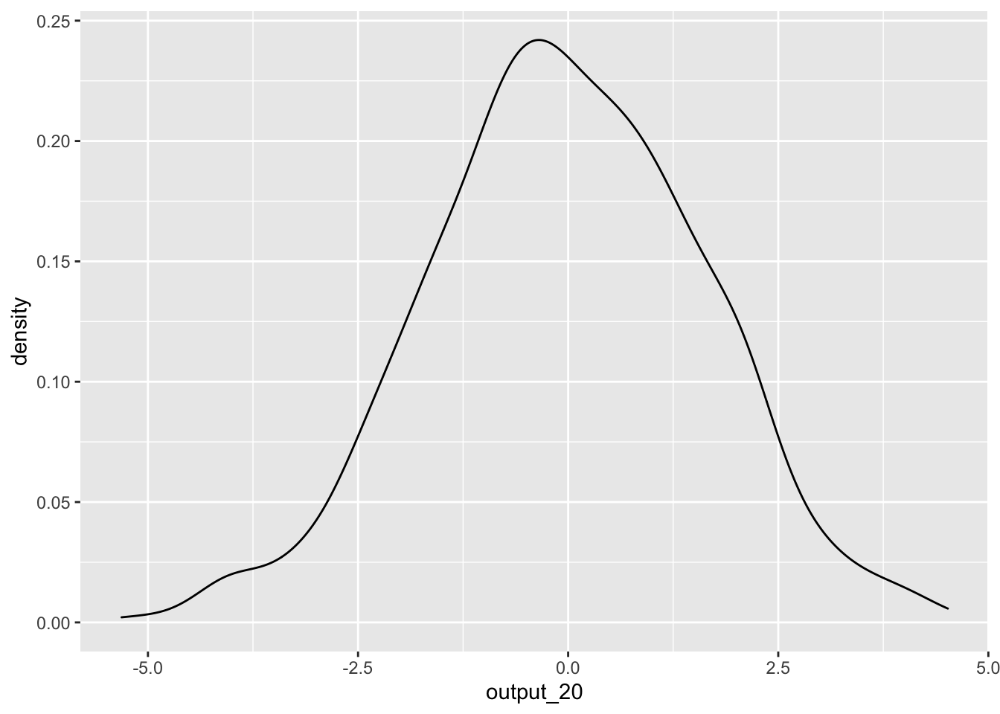

Content
These are the packages we will be using in this workbook. If you’ve been following the workbook sequentially, you should be familiar with the tidyverse package. The pwr package is used to conduct standard power analyses, while the broom package is used to convert the output from analysis functions to data.frames.
library(pwr)
library(tidyverse)
library(broom)pwr Package
For most standard analyses, such as an independent-samples t-test, the easiest way to conduct power analyses is by using functions in the pwr package. Functions from the pwr package work by specifying three of four bits of information that influence statistical power: the expected effect size, power threshold, and significance level (alpha), and the sample size. The function will then return whichever of the four parts was not specified. Typically, power analyses are used to calculate the sample size required before a study is conducted; therefore, this is what we will be focusing on here.
We will cover four examples: a power analysis for a correlation, an independent-samples t-test, a one-way ANOVA, and a multiple regression.
pwr and correlations
To conduct a power analysis for a correlation, we can use the pwr.r.test() function. This function expects three of four arguments:
- n = Sample Size
- r = Expected Effect size
- sig.level = Significance Level
- power = Power threshold
As discussed in the lecture, things like the significance level and power threshold are already chosen for you. Conventionally, the significance level is set to .05, while the power threshold is .80 (80%). Therefore, you only need to decide the expected effect size to calculate the required sample size.
Recall from the lecture series the following interpretation:
| Effect size | r |
|---|---|
| Small | .10 |
| Medium | .30 |
| Large | .50 |
Therefore, if we needed to calculate the required sample size for a correlation where you expect a medium effect, you could use the following code:
pwr.r.test(r = .30,sig.level = .05,power = .80)##
## approximate correlation power calculation (arctangh transformation)
##
## n = 84.07364
## r = 0.3
## sig.level = 0.05
## power = 0.8
## alternative = two.sidedThis would indicate that we would require a sample of 85 participants (rounded-up) to detect a medium effect. By playing around with the expected effect size, we can see how this impacts the required number of participants. For instance, if we expect a small effect, we will need a much larger sample size:
pwr.r.test(r = .10,sig.level = .05,power = .80)##
## approximate correlation power calculation (arctangh transformation)
##
## n = 781.7516
## r = 0.1
## sig.level = 0.05
## power = 0.8
## alternative = two.sidedpwr and t.tests
Similarly, we can use pwr.t.test() to conduct a power analysis for an independent-samples t-test. However, one thing to note is that the expected effect size for this function is a Cohen’s d. Therefore, we can use the following conventions:
| Effect size | d |
|---|---|
| Small | .20 |
| Medium | .50 |
| Large | .80 |
So, if we expect a medium effect, the code would be:
pwr.t.test(d = .50,sig.level = .05,power = .80)##
## Two-sample t test power calculation
##
## n = 63.76561
## d = 0.5
## sig.level = 0.05
## power = 0.8
## alternative = two.sided
##
## NOTE: n is number in *each* groupNote that the expected effect size is the minimum for each group. Therefore, you would need a total sample of 128 participants (rounded-up).
pwr and ANOVAs
For a one-way ANOVA, we can use the pwr.anova.test() function. This analysis assumes there will be equal numbers in each group. Again, this function uses another measure of effect size, Cohen’s f, which you can use the following interpretations:
| Effect size | f |
|---|---|
| Small | .10 |
| Medium | .25 |
| Large | .40 |
This function also requires an additional parameter k, which is the number of levels (or groups) in the IV. So, if you were conducting a one-way ANOVA with three groups in the IV, and expect a medium effect, the code would look like this:
pwr.anova.test(k = 3,f = .25,sig.level = .05,power = .80)##
## Balanced one-way analysis of variance power calculation
##
## k = 3
## n = 52.3966
## f = 0.25
## sig.level = 0.05
## power = 0.8
##
## NOTE: n is number in each groupAgain, the value provided for n is for each group, so you would need a total of 159 participants (rounded-up).
pwr and multiple regressions
For a power analysis for a multiple regression, we use pwr.f2.test(). Annoyingly, we again have a different measure used for effect size again - f2. You can follow this guide to get your estimated effect size (I’ve also added a column with the corresponding R-square value):
| Effect size | f2 | R-square |
|---|---|---|
| Small | .02 | .02 |
| Medium | .15 | .13 |
| Large | .35 | .26 |
For the pwr.f2.test() function, you need to also specify the number of predictors in the model as the argument u. Note, if you have an interaction term in your analysis, this counts as an additional predictor. As an example, if you were conducting a multiple regression with 4 predictors and expect a medium effect, the code for the power analysis would look like:
pwr.f2.test(u = 4,f2 = .15,sig.level = .05,power = .80)##
## Multiple regression power calculation
##
## u = 4
## v = 79.44992
## f2 = 0.15
## sig.level = 0.05
## power = 0.8Therefore, you would need at least 80 participants for this study. Note that the power analysis in this instance is for the overall model (i.e., for the variance in the outcome variable that is explained by all the predictors in the regression).
Custom Functions
Throughout our time with R, we have used many functions from different packages. Functions in these packages were written by other R users. While some of these functions do some complex things, every function in R is written the same way.
To create a function, you will use a function called function(), which has a couple of unique properties. Let’s demonstrate how function() works via an example. Here we create a simple function called add_numbers that adds two numbers together.
add_numbers <- function(number1,number2){
result <- number1 + number2
return(result)
}And here is our new custom function in action:
add_numbers(number1 = 3, number2 = 4)## [1] 7Let’s break these lines of code down. function() provides the base mechanism for defining a new function in R. Any new function can be saved as an object using the <- symbols, just like anything else in R (in the example above, the object name is add_numbers). The object name becomes the name of the function, which you will call to use the function. Any arguments you want in your custom functions are named as arguments within the brackets (in the above case, the arguments are number1 and number2). function() must always be followed by a set of curly brackets {} which can span multiple lines. Whatever occurs within these curly brackets is performed whenever you call the function. Each function can only return one output. This output must be put inside a return() function. Whatever is in the return() function is what is printed (or saved) when you run your custom function. If your function does not have this command, your function may not do anything.
Importantly, whatever happens inside the function happens in it’s own environment/workspace. That is, any objects created inside a function does not get saved in the global workspace. So in the example above, we cannot call upon the object result that we made in the function above. If you try, it will produce an error. You can also not use any objects in the global workspace unless it is supplied as an argument in the function.
Creating custom functions are helpful if you are planning to do the same computation multiple times on different objects. Instead of typing out the code each time, you can write it once in a function, and use that function to perform the operation.
Standardising Variables
Something that we have to perform often is standardising variables (or a vector of numbers). Previously we have used the scale() function to do this, but there are some quirks to this function that sometimes prevents the results from being used in future operations. Therefore, we can create a custom function that does the whole process for us.
Here is what the code would look like if we were to standardise a vector manually:
#This is the vector we wish to standardise.
vector
vector.mean <- mean(vector,na.rm = TRUE)
vector.sd <- sd(vector,na.rm = TRUE)
z.vector <- (vector - vector.mean)/vector.sdHowever, we can put this code within the curly brackets of a custom function, and create a new function called z. Remember to use the return() call to tell R that you want the standardised vector to be the output of your new function:
z <- function(vector){
vector
vector.mean <- mean(vector,na.rm = TRUE)
vector.sd <- sd(vector,na.rm = TRUE)
z.vector <- (vector - vector.mean)/vector.sd
return(z.vector)
}We can now use this function to standardise any vector of numbers we come across without using the awkward c(scale()) functions.
Simulating a data.frame via a Function
Now that we’ve gotten the taste for creating custom functions, let’s create another one that simulates data in a data.frame. We are going to recreate the data.frame from Workbook 5 where we tested the hypothesis that cat-people are more introverted than dog-people. Before we can do that though, we must introduce some new functions:
sample()
This function randomly samples options from a vector. For instance, below we randomly sample 40 objects who are either in the ‘cat’ group or the ‘dog’ group. To see more about how this function works, read help(sample).
sample(c("cat","dog"),40,replace = TRUE)## [1] "cat" "cat" "dog" "dog" "cat" "cat" "cat" "cat" "dog" "cat" "cat" "cat" "cat" "dog" "dog" "dog" "cat" "dog" "cat"
## [20] "cat" "dog" "dog" "cat" "cat" "dog" "dog" "cat" "cat" "cat" "dog" "cat" "dog" "dog" "dog" "dog" "dog" "cat" "cat"
## [39] "cat" "dog"rnorm()
This function creates a random continuous variable that is normally distributed. In the example below, we create a random normal distribution with a mean of 0 and a standard deviation of 1. To see more about how this function works, read help(rnorm).
rnorm(40,mean = 0,sd = 1)## [1] -0.82606681 -1.29337491 0.09440899 1.71903253 -1.28198671 -1.34246740 0.03015284 0.73249031 1.07215380
## [10] 0.38695095 0.53498707 0.20426001 0.09863067 -2.31494685 0.02403418 -0.91178901 2.80446902 0.61396042
## [19] 1.61597786 -0.44403630 0.14335495 -0.52441800 -0.45579353 0.62930838 -1.30518625 0.18106909 -0.54367752
## [28] -1.48895487 0.80740630 -1.18459703 1.26342824 0.67634780 1.25030555 1.05759048 0.07755036 -0.18589663
## [37] 1.54070821 -1.47352809 0.30484699 1.14787629We now have the tools to create our simulate data function, which we will save as create_dataset. It will take one argument, n, which specifies the number of participants in the data.frame.
We will set the mean and sd of the variable ‘introvert’ to 21.00 and 3.00 respectively, which is close enough to what we found in Workbook 4.
create_dataset <- function(n){
result <- data.frame(group = sample(c("cat","dog"),n,replace = TRUE),
introvert = rnorm(n,mean = 21,sd = 3))
return(result)
}Let’s test it out:
create_dataset(20)## group introvert
## 1 cat 18.85203
## 2 cat 19.94390
## 3 dog 19.90224
## 4 dog 15.35543
## 5 cat 15.25384
## 6 cat 20.07547
## 7 cat 16.93509
## 8 dog 21.72236
## 9 dog 20.69813
## 10 dog 18.80551
## 11 dog 17.45894
## 12 cat 20.07768
## 13 dog 20.97345
## 14 dog 22.59294
## 15 cat 19.69988
## 16 dog 21.74077
## 17 cat 20.43691
## 18 cat 21.29246
## 19 dog 20.40689
## 20 dog 16.99108Conduct a statistical test with simulated data.
We can do anything with this new simulated data.frame as if it were a data based on real observations. For instance, we could conduct an independent-samples t-test. Remember, the variables we created are completely random, so we would expect a non-significant result here.
t.test(introvert ~ group,create_dataset(20))##
## Welch Two Sample t-test
##
## data: introvert by group
## t = 0.23343, df = 12.38, p-value = 0.8192
## alternative hypothesis: true difference in means between group cat and group dog is not equal to 0
## 95 percent confidence interval:
## -3.621421 4.493835
## sample estimates:
## mean in group cat mean in group dog
## 21.28168 20.84547Let’s expand the function above. How about creating a function that simulates a dataset, then runs a t-test, and returns the results of the test? We can do this by including the function that runs a t.test within the function we wrote above. Note that we use the tidy() function from the broom package to easily access the results from the t-test.
simulate_test <- function(n){
result <- data.frame(group = sample(c("cat","dog"),n,replace = TRUE),
introvert = rnorm(n,mean = m.introvert,sd = sd.introvert))
test <- t.test(introvert ~ group, data = result) %>%
tidy()
return(test$estimate)
}simulate_test(20)## [1] -0.7576152Let’s go another step further and say we want to run a t-tests on simulated data 1000 times. Doing so will give us a distribution of estimates given a certain statistical test and sample size. We can do this by using the replicate() function. This function expects two arguments, the first is the number of times we want to conduct a function, the second is the function itself. In the case below, the output is saved as a vector.
output_20 <- replicate(1000,simulate_test(20))To see the distribution of estimates, we can plot these values:
ggplot() +
geom_density(aes(output_20))
But hang on! We know there is no effect as the two variables in the t-test are completely random. So how come we are getting such a wide-range of t-statistics? This demonstrates one of the core issues with statistical tests. A sample is only a portion of the entire population, and your estimate can vary greatly depending on the slice of the population that happens to make it into your sample.
What if we increase the number of participants in our simulated dataset to 200 participants?
output_200 <- replicate(1000,simulate_test(200))ggplot() +
geom_density(aes(output_200))We see that, while we still get a range of estimates, they are much less extreme. This is because with a larger sample size, the ‘slice’ that is our sample is more likely to be representative of our population, and therefore the t-statistic is more likely to be around the correct value. Using this knowledge, we can construct a power analysis to determine the minimum number of participants needed to accurately detect an effect.
Power analysis using simulations
Above, we replicated a data.frame where we do not expect to find a significant effect (because the variables are completely random and unrelated from each other). However, what if we expect an association? Using the same technique, we can run a power analysis to determine whether a certain research design and analysis plan has the ability to detect an effect given different sample size.
As covered in the lectures, power is the ability to detect an effect if it is there. Generally, things that influence power are effect size, alpha level (significance level), and number of observations.
In the code below, we again create a function, but include an additional argument for effect size (in the form of a mean difference between the ‘cat’ and ‘dog’ groups). Also, instead of returning the estimate, we will return the p-value.
simulate_test2 <- function(n,mean.diff){
result <- data.frame(group = sample(c("cat","dog"),n,replace = TRUE),
introvert = rnorm(n,mean = m.introvert,sd = sd.introvert)) %>%
mutate(mean.diff = mean.diff) %>%
mutate(introvert = ifelse(group == "cat",introvert - mean.diff/2,introvert + mean.diff/2))
test <- t.test(introvert ~ group, data = result) %>%
tidy()
return(test$p.value)
}Then, we can calculate the proportion of times we find a significant effect when alpha = .05. Let’s say that we expect a mean difference on of 2 on introversion between cat-people and dog-people.
cat.dog_difference <- 2Remember, using logical operators results in a logical variable, which is coded as TRUE = 1 and FALSE = 0. Therefore, we can use the mean() function to get the proportion of times out of the 200 simulations we correctly found a significant effect.
sim.results <- replicate(200,simulate_test2(20,cat.dog_difference))
power <- mean(sim.results < .05)
power## [1] 0.23The convention is that the analysis is sufficiently powered if it can detect an effect that is present 80% of the time. The power calculated for a sample size of 20 was 23%, which falls quite short of this threshold. What if we increased our sample size?
sim.results <- replicate(200,simulate_test2(240,cat.dog_difference))
power <- mean(sim.results < .05)
power## [1] 0.995By running the above simulations at different sample sizes, we will be able to determine the sample sizes needed to detect this effect at 80% power. Below is code to automatically run the simulate_test2() function at different sample sizes and save the results in a data.frame. There are some complicated things going on here, but see if you can make sense of it. You may need to look up what certain functions do.
power.grid <- data.frame(candidate_n = rep(seq(20,200,by = 20),each = 200)) %>%
mutate(power = vapply(candidate_n,simulate_test2,FUN.VALUE = 1,mean.diff = cat.dog_difference)) %>%
group_by(candidate_n) %>%
summarise(power = mean(power < .05))power.grid## # A tibble: 10 × 2
## candidate_n power
## <dbl> <dbl>
## 1 20 0.205
## 2 40 0.395
## 3 60 0.55
## 4 80 0.665
## 5 100 0.845
## 6 120 0.835
## 7 140 0.94
## 8 160 0.93
## 9 180 0.955
## 10 200 0.96This suggests that to detect a mean difference of 2 on introversion between cat-people and dog-people with our data 80% of the time, we would require a sample size between 80 and 100 to be confident in our result. We can also plot the simulated power analyses to help determine the sample size required.
ggplot(data = power.grid,aes(x = candidate_n,y = power)) +
geom_point() +
geom_smooth(colour = "blue") +
geom_hline(yintercept = .80,colour = "red")Compare the power estimate above with the one using the pwr.t.test() function below. Note: the simulation above calculates total N, so you will need to divide it by two to get the sample size for each group.
library(pwr)
#First we must calculate effect size (Cohen's D)
D <- cat.dog_difference/sqrt((sd.introvert^2 + sd.introvert^2)/2)
D## [1] 0.5532596#We then put this effect size into the pwr.t.test() function.
pwr.t.test(d = D,power = .8,sig.level = .05,type = "two.sample")##
## Two-sample t test power calculation
##
## n = 52.26157
## d = 0.5532596
## sig.level = 0.05
## power = 0.8
## alternative = two.sided
##
## NOTE: n is number in *each* group